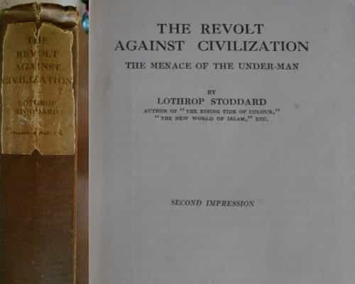
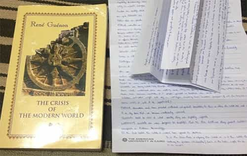
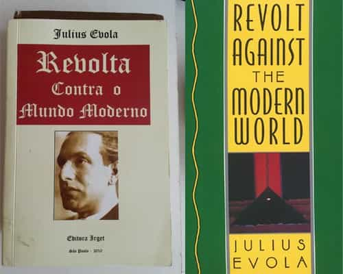
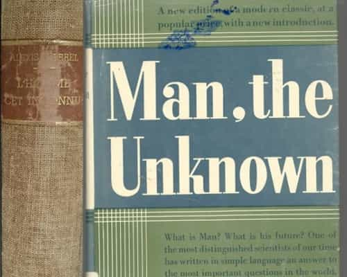
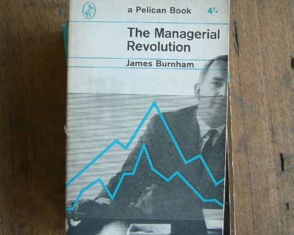

André is a young European who left his decaying country in 2012 for greener pastures. He enjoys exploring subterranean places, reading about a host of interconnected topics, and yearns for Tradition.


Old books range from mildly interesting to immensely inspiring. A book written decades ago—or even more—by someone with an actual concern shows how people then perceived or thought things. It shows what issues were deemed worthy of concern, how this man and/or his time pondered at them, and what he wanted the reader to think about, be the latter a contemporary or not.
People from the Belle Époque (1870-1914) wrote beautifully, but were somehow too romantic, overly obsessed with aesthetics, and excessively implicated in intra-Western rows. They knew how to do prose and feats of erudition but showed reluctant to raise issues too deeply, perhaps because they put a lot of trust in progress as a kind of automatic process. Well, much before Adorno’s overrated “negative dialectics”, in 1919 everyone knew that dialectical processes do not always lead to a positive result.
The most interesting antique books one can find, assuming one’s interest into politics and what’s behind, were published after 1918 but before the Left took over the academia and cultural life.
These books, written after the butchery of the trenches, showed no more naive optimism or easy trust in progress—the Belle Époque equivalent of liberal feel-goodism. Said trust had died under shrapnel and bombs, alike with millions of young people, in one of the most bloody and absurd wars modern history saw. When the Versailles treaty was signed, an existential angst had started to impregnate the atmosphere. Thinkers pondered harder, deeper questions: they bravely put forward issues such as the identity of Western civilization, the nature of progress, the destiny of white people and demographics, the legitimate place of free markets, the equilibrium between social classes, and many other ones.
These questions are still ours.

Having been made “controversial” before the end of his life by the rise of the Big Left, Lothrop Stoddard is likely one of the most underrated American intellectuals of that period. Written at the midst of Bolshevist unrest, his Revolt Against Civilization argues that the development of civilization forces men into more complex lives, as they have to rely more on technology, obey to more complex laws and find their place in a wider world. Incidentally, this argument has been vindicated by Herrnstein and Murray’s The Bell Curve (1996).
Civilization, Stoddard notes, should require more intelligent and more virtuous men in order to keep evolving. The problem is that modern West has been undergoing the very opposite process. The Great War mainly killed the best and bravest, who died without offspring, whereas the craven and average were encouraged to produce more children as to get relieved from the front lines. Besides, a complex civilization would show unable to integrate or make a constructive use of “inferiors”—broadly, the impulsive, crime-prone, antisocial, low-IQ individuals—who in turn would rather make it crumble than let it evolve without them.
Ultimately, in order to save civilization and ensure its future progress, society should accept to weed the “under-man” out by not letting him procreate too much, whereas the best should be encouraged to have many babies, thus improving the human stock at each generation.

Guénon could agree with Stoddard on how human material had been dragged down in quality by a blindly industrial civilization. He hailed how, at least, the dogma of an indefinite “progress” fell, which opened hopes that the Zeitgeist would change for the better. Beyond this partial agreement Guénon’s perspective was quite different: he believed in the traditional (Hindu, Viking, Ancient Greek…) theory of the “four ages” according to which history follows a process of general decline.
Modern times were defined by the oblivion or negation of the sacred and the triumph of hubris. One could already see this in Renaissance humanism, which planted the seeds of a bloated baroque self-celebration and of the Protestant pretense to reading the Bible without genuine qualification:
Men were indeed concerned to reduce everything to purely human proportions, to eliminate every principle of a higher order, and, one might say, symbolically to turn away from the heavens under pretext of conquering the earth. (chap.1)
According to Guénon, the Vishnu-Purana—a sacred book of Hinduism containing prophecies related to a distant future—, the Apocalypse of John and other traditional sources had predicted the anomaly we are living through:
According to all the indications furnished by the traditional doctrines, we have in fact entered upon the last phase of the Kali-Yuga, the darkest period of this ‘dark age’, the state of dissolution from which it is impossible to emerge otherwise than by a cataclysm, since it is not a mere readjustment that is necessary at such a stage, but a complete renovation. Disorder and confusion prevail in every domain and have been carried to a point far surpassing all that has been known previously… Have we not arrived at that terrible age, announced in the Sacred Books of India, ‘when the castes shall be mingled, when even the family shall no longer exist’? (chap.1)
Just like Stoddard, Guénon advocated for the recreation of a potent and responsible elite. But unlike him, Guénon saw further than IQ and readiness to work: his idea of the new elite implied that they should be initiated, with an intuition of the divine and sacred, thus making them far more than big-brained managers.

Guénon’s unflinching critique of modern society—before Marxists appropriated the term “critique”, just as they appropriated many concepts they didn’t come up with—had a discrete but powerful effect. One of its main readers was Julius Evola, an Italian of noble lineage who showed an interest in magic and an impressively extended knowledge of history.
His Revolt Against The Modern World, that would eventually be considered his magnum opus, was a far-reaching study of a rarely matched quality. There Evola gave a broad view of what the “world of Tradition” is: a world where spirituality was a concrete reality lived every day, where religious rites were lively and genuinely connected their participants to the divine, where everyone would understand their right place and so on.
Then, after having drawn his landmarks from a variety of antique and medieval sources, Evola showed how the “world of Tradition” fell from its relative grace through, mostly, various wars, oblivion, and takeovers by inferior or degenerated castes. His explanations reconstitute the historical process of degeneracy from pre-Socratic Antiquity to twentieth century Bolshevism.
The scope and depth of this book are beyond any short description. Although everything Evola says isn’t beyond controversy—for example, he constantly tries to reverse the first and second castes’ respective roles—, the richness, coherence and clarity of his view make this book a must-read.

A doctor and surgeon, Alexis Carrel received a Nobel Prize in 1912 after making several breakthroughs in organ transplantation. His background seemingly didn’t predispose him to intellectual dissent. Nonetheless, in 1903, he witnessed a miracle on a train to the city of Lourdes and was upright enough to tell the story, which compromised but didn’t stop his career.
His 1935 book Man, The Unknown was such a best-seller one can still find good-standing original editions at a fair price. It is mainly a mixture between detailed accounts of anatomy and medicine in general on the one hand and more philosophical reflections on modern civilization and humanity on the other. Both elements are way beyond overrated contemporary essays, in scope, deepness, and detail.
Just like the aforementioned books, Carrel sensed that modern civilization had been marked by an insidious degeneracy:
Man cannot follow any more modern civilization on the path it entered in. There he degenerates. Fascinated by the beauty of matter sciences, he fails to understand that his body and consciousness obey to laws that are darker, but also more inflexible, than those of the sidereal world. (Foreword)
The modern world developed through a blind dynamic of headlong rush. Innovators have been running behind material power and economic growth, but then, the world of yesterday—a world humanity was more adapted to—has been forgotten amidst the crowds and smoke of factories. Science itself underwent a process of excessive specialization: knowledge has been splintered between ivory tower specialists, and, more importantly, scientists care more about the abstractions of their own theories than about facts understood through the lenses of these theories.
Carrel’s book attempts to give a small remedy by pondering about various related themes, such as the works of cells, organs, as well as heredity, environment or modernity, to give a well-rounded idea of man. That is, a synthetic idea instead of an uprooted, overly analytical, theory-originating abstraction.
Beyond the descriptions and issues presented, Man The Unknown gives hints and loose propositions of reform: Carrel suggests that urbanized people move back to the land, that children get more education outdoor, and, more controversially, that society stops paying a hefty price for criminals through an inefficient prison system.

Often referred to as a conservative because of his later book Suicide of the West (1964), Burnham is a kind of mixed bag. When he was young, he mingled with Trotskyites, got expelled from the Socialist Party, and broke up with Trotsky to turn into a CIA adviser against Soviet Union. His book The Managerial Revolution aims at describing the transition from modern capitalism, not to communism, but to a managerial State where technocratic directors supervise mostly everything. The book inspired diverse figures, from George Orwell to Sam Francis.
Burnham’s leftist—not to say Marxist—bias outcrops there on various occasions. He says, for example, that all ideologies stem from particular interests, an idea which shows a kind of jaded cynicism at the same time than a Leftist “philosophy of suspicion”; he also divides modern society in two classes, the “bourgeois” owners and the “proletarian” workers—a rather simplistic and obviously Marxist view where the middle class, as well as most individuals’ situations, are completely brushed off.
In spite of these bias, Burnham’s main thesis is of important interest and explains what has been eventually called crony capitalism. High-ranking State officers and wealthy businessmen, i.e. parts of the State and of the so-called civil society, mingle into a new class of managers. They can work in the private sector, be civil servants, or more often both through revolving doors. Whether they exert their power through law or money, they are a new class, Burnham says, and use their intelligence to justify their burdening paternalism: think about Cass Sunstein’s Nudge for a typical example.
Whatever their career paths and personal interests, all thinkers mentioned above—apart, perhaps, from the cynical Burnham—had an acute intuition of the degeneracy of modern society. They sensed the necessity to orient society anew, without falling into primitivism or destroying hierarchies. Each of them insisted on a particular aspect of modern degeneration, be it biology, the blind and unbearable effects of technology. Stoddard, in particular, was keen to defend civilization and its numberless inventions no matter the imperfections—even if he almost agreed with the antimodern Guénon on the need to reforge a true elite.
Most, if not all, of these existential questions have been put aside and their thinkers blamed thanks to Big Leftism. Today, we are struggling with these questions again, as we sense the necessity to break up with the era of globalists and consequently put an alternative forward. Reading even just one of these books helps to ponder them seriously anew.
Read Next: A Gentleman’s Pleasure: Collecting Pieces of History